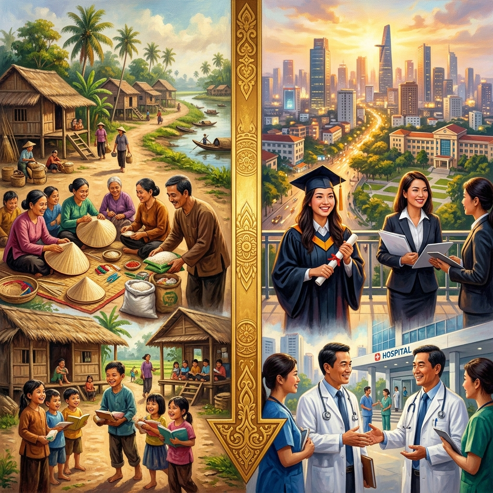
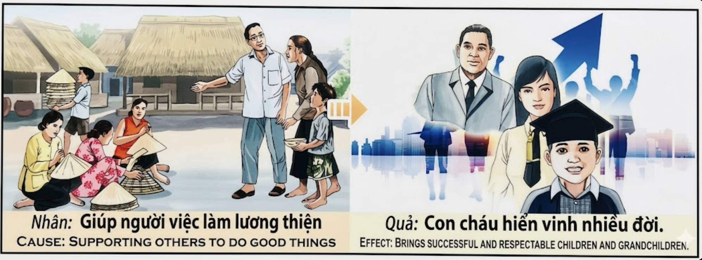

La Cosecha de los HijosThe Harvest of ChildrenIl Raccolto dei Figli子孙的收获حصاد الأبناءУрожай детейDie Ernte der KinderLa Récolte des Enfants子孫の収穫A Colheita dos FilhosMùa Gặt Của Con Cháu
El que impulsa las obras honestas de sus semejantes siembra en el tejido del karma las raíces de una estirpe que florecerá en dignidad, honra y renombre durante generaciones. He who supports the honest endeavors of his fellow man sows in the fabric of karma the roots of a lineage that will flourish in dignity, honor, and renown for generations. Colui che sostiene le opere oneste dei propri simili semina nel tessuto del karma le radici di una stirpe che fiorirà in dignità, onore e rinomanza per generazioni. 那些支持他人正直事业的人，在业力的织物中播下了一个家族的根基，这个家族将在几代人中以尊严、荣誉和声望繁荣昌盛。 من يدعم الأعمال الصادقة لأبناء جلدته يزرع في نسيج الكارما جذور سلالة ستزدهر بالكرامة والشرف والشهرة لأجيال. Тот, кто поддерживает честные труды своих ближних, сеет в ткани кармы корни рода, который будет процветать в достоинстве, чести и уважении на протяжении поколений. Wer die ehrlichen Bemühungen seiner Mitmenschen unterstützt, sät in das Gefüge des Karmas die Wurzeln einer Linie, die für Generationen in Würde, Ehre und Ansehen aufblühen wird. Celui qui soutient les œuvres honnêtes de ses semblables sème dans le tissu du karma les racines d'une lignée qui s'épanouira dans la dignité, l'honneur et le renom pour des générations. 仲間の誠実な営みを支える者は、業の織物の中に一族の根を蒔きます。その一族は幾世代にもわたって尊厳、名誉、名声の中に花開くことでしょう。 Aquele que apoia as obras honestas dos seus semelhantes semeia no tecido do karma as raízes de uma estirpe que florescerá em dignidade, honra e renome durante gerações. Kẻ nâng đỡ những công việc lương thiện của người xung quanh đang gieo vào tấm thảm nhân quả những cội rễ của một dòng tộc sẽ nở rộ trong phẩm giá, danh dự và tiếng thơm qua bao thế hệ.
Existe en la naturaleza del karma una ley que los sabios de todas las tradiciones han observado con asombro: el bien que hacemos a los demás no solo nos recompensa a nosotros, sino que se propaga como una raíz subterránea hacia nuestros descendientes. Cuando una persona apoya con sinceridad y entusiasmo las obras buenas y honestas de quienes la rodean —la artesana que teje con paciencia, el maestro que ilumina mentes, el trabajador que levanta su familia con sudor honrado— está firmando un contrato sagrado con el universo. Ese contrato estipula que el respaldo dado a la virtud ajena retorna amplificado en la siguiente generación.
El mecanismo kármico es preciso: al nutrir el esfuerzo recto de otros, activamos el campo de la "buena fortuna familiar heredada". Los hijos y nietos de quien sirvió de puente para la prosperidad ajena nacen con vientos favorables. Las puertas de la educación se abren ante ellos con mayor facilidad. Encuentran mentores en momentos críticos. Desarrollan un carácter íntegro que los hace merecedores del respeto de su comunidad. El karma no castiga ni premia caprichosamente: simplemente refleja, con exactitud matemática, la energía invertida en el bien colectivo.
There exists in the nature of karma a law that the wise of all traditions have observed with wonder: the good we do for others not only rewards us, but spreads like an underground root toward our descendants. When a person sincerely and enthusiastically supports the good and honest works of those around them—the artisan who weaves with patience, the teacher who illuminates minds, the worker who builds his family with honest sweat—they are signing a sacred contract with the universe. That contract stipulates that the support given to the virtue of others returns amplified in the next generation.
The karmic mechanism is precise: by nurturing the righteous effort of others, we activate the field of "inherited family good fortune." The children and grandchildren of those who served as a bridge for the prosperity of others are born with favorable winds. The doors of education open before them more easily. They find mentors at critical moments. They develop an upright character that makes them worthy of the respect of their community. Karma does not punish or reward capriciously: it simply reflects, with mathematical precision, the energy invested in the collective good.
Esiste nella natura del karma una legge che i saggi di tutte le tradizioni hanno osservato con meraviglia: il bene che facciamo agli altri non solo ci ricompensa, ma si diffonde come una radice sotterranea verso i nostri discendenti. Quando una persona sostiene con sincerità ed entusiasmo le opere buone e oneste di chi la circonda —l'artigiana che tesse con pazienza, il maestro che illumina le menti, il lavoratore che costruisce la sua famiglia con sudore onesto— sta firmando un contratto sacro con l'universo.
Il meccanismo karmico è preciso: nutriendo il retto sforzo degli altri, attiviamo il campo della "buona fortuna familiare ereditata". I figli e i nipoti di chi ha fatto da ponte alla prosperità altrui nascono con venti favorevoli. Le porte dell'istruzione si aprono davanti a loro più facilmente. Trovano mentori nei momenti critici. Sviluppano un carattere integro che li rende degni del rispetto della loro comunità.
业力的本质中存在一条规律，所有传统的智者都带着敬畏之心观察到这一规律：我们为他人所做的善事，不仅回报我们自身，还像地下的根系一样向我们的后代蔓延。当一个人真诚而热情地支持身边人的善良正直之举——耐心编织的工匠、启迪心灵的教师、以诚实劳动养育家庭的工人——他就是在与宇宙签订一份神圣的契约。这份契约规定，对他人美德的支持将在下一代中加倍返还。
业力机制是精确的：通过滋养他人的正当努力，我们激活了"遗传家族好运"的领域。那些为他人繁荣搭桥铺路之人的子女和孙辈，生来便享有顺风。教育的大门在他们面前更容易打开。他们在关键时刻找到导师。他们培养出高尚的品格，使自己值得社区的尊重。业力不会任意惩罚或奖励：它只是以数学般的精确度，反映出投入集体善行的能量。
ثمة في طبيعة الكارما قانون لاحظه حكماء جميع التقاليد بدهشة: الخير الذي نصنعه للآخرين لا يكافئنا فحسب، بل ينتشر كجذر تحت الأرض نحو أحفادنا. عندما يدعم الشخص بصدق وحماس الأعمال الجيدة والصادقة لمن حوله—الحرفية التي تنسج بصبر، والمعلم الذي يضيء العقول، والعامل الذي يبني أسرته بعرق شريف—فإنه يوقع عقداً مقدساً مع الكون.
الآلية الكارمية دقيقة: بتغذية الجهد الصالح للآخرين، نُفعّل مجال "الحظ الأسري الموروث". يولد أبناء وأحفاد من كانوا جسراً لازدهار الآخرين في ظل رياح مواتية. تنفتح أمامهم أبواب التعليم بسهولة أكبر. يجدون موجهين في اللحظات الحرجة. يطورون شخصية سليمة تجعلهم أحق باحترام مجتمعهم.
В природе кармы существует закон, который мудрецы всех традиций наблюдали с изумлением: добро, которое мы делаем для других, не только вознаграждает нас, но и распространяется, как подземный корень, к нашим потомкам. Когда человек искренне и с энтузиазмом поддерживает добрые и честные дела тех, кто его окружает — мастерицы, терпеливо ткущей шляпы, учителя, просвещающего умы, работника, строящего семью честным трудом — он подписывает священный договор со вселенной.
Кармический механизм точен: питая праведные усилия других, мы активируем поле «унаследованной семейной удачи». Дети и внуки тех, кто служил мостом к процветанию других, рождаются с попутным ветром. Двери образования открываются перед ними легче. Они находят наставников в критические моменты. Они развивают честный характер, который делает их достойными уважения своего сообщества.
In der Natur des Karmas gibt es ein Gesetz, das die Weisen aller Traditionen mit Staunen beobachtet haben: Das Gute, das wir für andere tun, belohnt nicht nur uns selbst, sondern breitet sich wie eine unterirdische Wurzel zu unseren Nachkommen aus. Wenn jemand die guten und ehrlichen Werke der Menschen um sich herum aufrichtig und enthusiastisch unterstützt — die Handwerkerin, die geduldig webt, den Lehrer, der Geister erleuchtet, den Arbeiter, der seine Familie mit ehrlichem Schweiß aufbaut — unterzeichnet er einen heiligen Vertrag mit dem Universum.
Der karmische Mechanismus ist präzise: Indem wir die rechtschaffenen Bemühungen anderer nähren, aktivieren wir das Feld des „geerbten Familienglücks". Die Kinder und Enkel derjenigen, die als Brücke für den Wohlstand anderer dienten, werden mit günstigen Winden geboren. Die Türen zur Bildung öffnen sich vor ihnen leichter. Sie finden Mentoren in kritischen Momenten. Sie entwickeln einen aufrechten Charakter, der sie des Respekts ihrer Gemeinschaft würdig macht.
Il existe dans la nature du karma une loi que les sages de toutes les traditions ont observée avec émerveillement : le bien que nous faisons aux autres ne nous récompense pas seulement, mais se répand comme une racine souterraine vers nos descendants. Lorsqu'une personne soutient avec sincérité et enthousiasme les bonnes et honnêtes œuvres de ceux qui l'entourent — l'artisane qui tisse patiemment, l'enseignant qui illumine les esprits, le travailleur qui construit sa famille à la sueur de son front honnête — elle signe un contrat sacré avec l'univers.
Le mécanisme karmique est précis : en nourrissant l'effort juste des autres, nous activons le champ de la « bonne fortune familiale héritée ». Les enfants et petits-enfants de ceux qui ont servi de pont à la prospérité d'autrui naissent avec des vents favorables. Les portes de l'éducation s'ouvrent devant eux plus facilement. Ils trouvent des mentors aux moments critiques. Ils développent un caractère intègre qui les rend dignes du respect de leur communauté.
業の本質には、あらゆる伝統の賢者たちが驚きをもって観察してきた法則があります。他者に対して行う善は、私たち自身に報いをもたらすだけでなく、地下の根のように子孫へと広がっていきます。周囲の人々の善良で誠実な営みを真摯に、そして熱意を持って支える者——忍耐強く織り続ける職人、心に灯をともす教師、真摯な汗で家族を養う労働者——は、宇宙と神聖な契約を交わしているのです。
カルマの仕組みは精密です。他者の正しい努力を育むことで、私たちは「受け継がれる家族の幸運」という場を活性化させます。他者の繁栄への橋渡しをした人々の子や孫は、追い風を受けて生まれてきます。教育の扉は彼らの前でより開かれます。肝心な局面で師に出会います。誠実な人格を育み、社会の尊敬に値する存在となります。
Existe na natureza do karma uma lei que os sábios de todas as tradições observaram com admiração: o bem que fazemos aos outros não só nos recompensa, mas propaga-se como uma raiz subterrânea em direção aos nossos descendentes. Quando uma pessoa apoia com sinceridade e entusiasmo as obras boas e honestas de quem a rodeia — a artesã que tece com paciência, o mestre que ilumina mentes, o trabalhador que constrói a sua família com suor honrado — está a assinar um contrato sagrado com o universo.
O mecanismo kármico é preciso: ao nutrir o esforço recto dos outros, ativamos o campo da "boa fortuna familiar herdada". Os filhos e netos de quem serviu de ponte para a prosperidade alheia nascem com ventos favoráveis. As portas da educação abrem-se diante deles com maior facilidade. Encontram mentores em momentos críticos. Desenvolvem um carácter íntegro que os torna merecedores do respeito da sua comunidade.
Trong bản chất của nhân quả tồn tại một quy luật mà những bậc hiền triết của mọi truyền thống đều quan sát thấy với sự kính ngưỡng: điều tốt mà chúng ta làm cho người khác không chỉ đền đáp cho bản thân ta, mà còn lan tỏa như rễ cây ngầm dưới đất để vươn tới con cháu chúng ta. Khi một người thành tâm và hăng hái hỗ trợ những việc làm tốt đẹp, lương thiện của những người xung quanh — người thợ thủ công kiên nhẫn đan nón, người thầy soi sáng tâm trí, người lao động nhọc nhằn nuôi gia đình bằng mồ hôi nước mắt lương thiện — họ đang ký kết một bản giao kèo thiêng liêng với vũ trụ.
Cơ chế nhân quả là chính xác tuyệt đối: bằng cách bồi đắp cho nỗ lực chính đáng của người khác, chúng ta kích hoạt trường năng lượng của "phước lành gia đình được thừa hưởng". Con cái và cháu chắt của những ai đã bắc cầu cho sự thịnh vượng của người khác sinh ra đã có thiên thời địa lợi. Cánh cửa học vấn mở ra trước mặt họ dễ dàng hơn. Họ tìm thấy người dẫn đường trong những thời khắc then chốt. Họ hình thành nhân cách ngay thẳng khiến họ xứng đáng với sự kính trọng của cộng đồng.
El Tejedor de Destinos
The Weaver of Destinies
Il Tessitore di Destini
命运的编织者
نسّاج الأقدار
Ткач судеб
Der Weber der Schicksale
Le Tisserand des Destins
運命の機織り師
O Tecelão dos Destinos
Người Dệt Nên Số Phận
En las márgenes del río Perfume, en Vietnam, vivía un hombre llamado Nguyen Van Duc. Era comerciante de telas, pero su mayor alegría no era vender, sino impulsar. Cada vez que veía a una familia humilde confeccionando sombreros cónicos para sobrevivir, Duc se acercaba, les compraba toda la producción a precio justo, les traía materiales mejores y hablaba de ellos en los mercados lejanos, recomendándolos sin pedir nada a cambio. "¿Por qué lo haces?", le preguntaba su vecino. "Porque su éxito honrado me eleva a mí también", respondía Duc.
Duc murió siendo un hombre modesto. Pero sucedió algo extraordinario en la generación siguiente. Su hija mayor fue becada por una familia del mercado a la que él había ayudado; terminó siendo médica. Su hijo obtuvo el apoyo de un comerciante agradecido para estudiar ingeniería. Su nieta, que de niña vio a su abuelo entregar telas y esperanza, creció con una determinación de acero y llegó a ser rectora de una universidad.
Cuando la nieta fue a depositar flores en la tumba de su abuelo, le dijo: "Abuelo, nunca tuviste dinero para pagarnos los estudios. Sin embargo, cada puerta que se nos abrió tenía tu mano detrás. El karma no olvida a quienes apoyan el trabajo honrado de los demás. Tú tejiste nuestros destinos sin saberlo, hilo a hilo, cada vez que extendiste la mano a un artesano."
On the banks of the Perfume River in Vietnam, there lived a man named Nguyen Van Duc. He was a fabric merchant, but his greatest joy was not to sell, but to support. Every time he saw a humble family making conical hats to survive, Duc would approach them, buy their entire production at a fair price, bring them better materials, and speak of them in distant markets, recommending them without asking for anything in return. "Why do you do it?" asked his neighbor. "Because their honest success also elevates me," Duc replied.
Duc died a modest man. But something extraordinary happened in the next generation. His eldest daughter was given a scholarship by a market family he had helped; she ended up becoming a doctor. His son received support from a grateful merchant to study engineering. His granddaughter, who as a child had watched her grandfather deliver fabric and hope, grew up with a steely determination and went on to become the rector of a university.
When the granddaughter went to lay flowers on her grandfather's grave, she said: "Grandfather, you never had money to pay for our studies. Yet every door that opened for us had your hand behind it. Karma does not forget those who support the honest work of others. You wove our destinies without knowing it, thread by thread, every time you extended your hand to an artisan."
Sulle rive del Fiume dei Profumi, in Vietnam, viveva un uomo di nome Nguyen Van Duc. Era un commerciante di stoffe, ma la sua gioia più grande non era vendere, ma sostenere. Ogni volta che vedeva una famiglia umile confezionare cappelli conici per sopravvivere, Duc si avvicinava, acquistava tutta la produzione a un prezzo equo, portava materiali migliori e parlava di loro nei mercati lontani, raccomandandoli senza chiedere nulla in cambio.
Duc morì come uomo modesto. Ma nella generazione successiva accadde qualcosa di straordinario. Sua figlia maggiore ricevette una borsa di studio da una famiglia del mercato che lui aveva aiutato; divenne medico. Suo figlio ottenne il sostegno di un mercante riconoscente per studiare ingegneria. Sua nipote divenne rettrice di un'università.
Quando la nipote andò a deporre fiori sulla tomba del nonno, disse: "Nonno, non hai mai avuto soldi per pagarci gli studi. Eppure ogni porta che si è aperta per noi aveva la tua mano dietro. Il karma non dimentica chi sostiene il lavoro onesto degli altri. Hai tessuto i nostri destini senza saperlo, filo dopo filo, ogni volta che hai teso la mano a un artigiano."
在越南香河岸边，住着一个名叫阮文德的男人。他是一位布料商人，但他最大的快乐不是销售，而是扶持。每当他看到一个贫苦家庭制作锥形帽来谋生时，阮文德就会走上前去，以公平的价格买下他们所有的产品，带来更好的原材料，并在远处的市场上介绍他们，毫无所求地推荐他们。
阮文德去世时依然是个普通人。但下一代发生了非凡的事情。他的大女儿得到了他曾经帮助过的一个市场家庭的奖学金，最终成为了一名医生。他的儿子得到了一位感激的商人的资助，得以学习工程学。他的孙女成了一所大学的校长。
当孙女去祖父墓前献花时，她说道："祖父，您从来没有钱支付我们的学费。然而，为我们打开的每一扇门背后都有您的双手。业力不会忘记那些支持他人诚实工作的人。您在不知不觉中编织了我们的命运，一根根丝线，每次当您向工匠伸出援手的时候。"
على ضفاف نهر العطور في فيتنام، كان يعيش رجل يدعى Nguyen Van Duc. كان تاجراً للأقمشة، لكن أعظم بهجته لم تكن في البيع بل في الدعم. كلما رأى عائلة متواضعة تصنع القبعات المخروطية للبقاء على قيد الحياة، كان يقترب منهم ويشتري إنتاجهم بالكامل بسعر عادل ويجلب لهم مواد أفضل ويذكرهم في الأسواق البعيدة.
مات Duc رجلاً متواضعاً. لكن شيئاً استثنائياً حدث في الجيل التالي. حصلت ابنته الكبرى على منحة دراسية من عائلة في السوق كان قد ساعدها؛ وأصبحت طبيبة. وحصل ابنه على دعم تاجر ممتن لدراسة الهندسة. وأصبحت حفيدته رئيسة جامعة.
حين ذهبت الحفيدة لوضع زهور على قبر جدها، قالت: 'يا جدي، لم يكن لديك المال قط لدفع ثمن دراستنا. ومع ذلك، كان وراء كل باب فُتح لنا يدك. الكارما لا تنسى من يدعم العمل الشريف للآخرين. لقد نسجت أقدارنا دون أن تدري، خيطاً بخيط، في كل مرة مددت يدك إلى حرفي'.
На берегах Реки ароматов во Вьетнаме жил человек по имени Нгуен Ван Дык. Он был торговцем тканями, но его главной радостью была не торговля, а поддержка чужих усилий. Каждый раз, видя бедную семью, плетущую конические шляпы, чтобы выжить, Дык подходил к ним, скупал весь товар по справедливой цене, привозил лучшие материалы и рекомендовал их на далёких рынках, не прося ничего взамен.
Дык умер скромным человеком. Но в следующем поколении произошло нечто необычайное. Его старшая дочь получила стипендию от рыночной семьи, которой он когда-то помог, и стала врачом. Его сын получил поддержку благодарного торговца и изучил инженерное дело. Его внучка стала ректором университета.
Когда внучка пришла положить цветы на могилу деда, она сказала: «Дедушка, у тебя никогда не было денег, чтобы платить за нашу учёбу. Но за каждой дверью, что открылась перед нами, стояла твоя рука. Карма не забывает тех, кто поддерживает честный труд других. Ты ткал наши судьбы, не ведая того, нить за нитью, каждый раз, когда протягивал руку помощи мастеровому».
An den Ufern des Parfümflusses in Vietnam lebte ein Mann namens Nguyen Van Duc. Er war Stoffhändler, aber seine größte Freude war nicht das Verkaufen, sondern das Unterstützen. Jedes Mal, wenn er eine bescheidene Familie sah, die konische Hüte herstellte, um zu überleben, näherte er sich ihnen, kaufte ihre gesamte Produktion zu einem fairen Preis, brachte bessere Materialien und empfahl sie auf fernen Märkten, ohne etwas dafür zu verlangen.
Duc starb als bescheidener Mann. Aber in der nächsten Generation geschah etwas Außergewöhnliches. Seine älteste Tochter erhielt ein Stipendium von einer Marktfamilie, der er geholfen hatte; sie wurde Ärztin. Sein Sohn erhielt die Unterstützung eines dankbaren Kaufmanns für ein Ingenieurstudium. Seine Enkelin wurde Rektorin einer Universität.
Als die Enkelin Blumen auf das Grab ihres Großvaters legte, sagte sie: „Großvater, du hattest nie Geld, um unsere Ausbildung zu bezahlen. Doch hinter jeder Tür, die sich uns öffnete, stand deine Hand. Das Karma vergisst nicht, wer die ehrliche Arbeit anderer unterstützt. Du hast unsere Schicksale gewoben, ohne es zu wissen, Faden für Faden, jedes Mal, wenn du einem Handwerker die Hand gereicht hast."
Sur les rives de la Rivière des Parfums, au Vietnam, vivait un homme nommé Nguyen Van Duc. Il était marchand de tissus, mais sa plus grande joie n'était pas de vendre, mais de soutenir. Chaque fois qu'il voyait une famille modeste confectionner des chapeaux coniques pour survivre, Duc s'approchait d'eux, achetait toute leur production à un prix juste, leur apportait de meilleurs matériaux et les recommandait sur les marchés lointains, sans rien demander en retour.
Duc mourut homme modeste. Mais quelque chose d'extraordinaire se produisit dans la génération suivante. Sa fille aînée reçut une bourse d'une famille du marché qu'il avait aidée ; elle finit par devenir médecin. Son fils obtint le soutien d'un marchand reconnaissant pour étudier l'ingénierie. Sa petite-fille devint rectrice d'une université.
Lorsque la petite-fille alla déposer des fleurs sur la tombe de son grand-père, elle dit : « Grand-père, tu n'as jamais eu d'argent pour payer nos études. Pourtant, derrière chaque porte qui s'est ouverte pour nous, il y avait ta main. Le karma n'oublie pas ceux qui soutiennent le travail honnête des autres. Tu as tissé nos destins sans le savoir, fil après fil, chaque fois que tu as tendu la main à un artisan. »
ベトナムの香川（フオン川）のほとりに、グエン・ヴァン・ドゥックという名の男が住んでいました。彼は布地の商人でしたが、彼の最大の喜びは売ることではなく、支えることでした。貧しい家族が生活のために円錐形の帽子を作っているのを見るたびに、ドゥックは近づき、公正な価格で全ての生産物を買い取り、より良い素材を届け、何も求めずに遠くの市場で彼らを紹介しました。
ドゥックは質素な人として亡くなりました。しかし、次の世代に驚くべきことが起きました。長女は彼が助けた市場の一家から奨学金を得て、医師になりました。息子は感謝深い商人の支援を得て工学を学びました。孫娘は大学の学長になりました。
孫娘が祖父の墓に花を手向けたとき、彼女はこう言いました。「おじいさん、あなたには私たちの学費を払うお金なんてなかった。でも私たちのために開いてくれたすべての扉の後ろには、あなたの手がありました。カルマは他者の誠実な仕事を支えた人を忘れません。あなたは気づかぬうちに、職人に手を差し伸べるたびに、糸を一本ずつ、私たちの運命を織っていたのです」。
Nas margens do Rio dos Perfumes, no Vietname, vivia um homem chamado Nguyen Van Duc. Era comerciante de tecidos, mas a sua maior alegria não era vender, mas apoiar. Sempre que via uma família humilde a fazer chapéus cónicos para sobreviver, Duc aproximava-se deles, comprava toda a produção a um preço justo, trazia materiais melhores e falava deles em mercados distantes, recomendando-os sem pedir nada em troca.
Duc morreu como um homem modesto. Mas na geração seguinte aconteceu algo extraordinário. A sua filha mais velha recebeu uma bolsa de uma família do mercado a quem ele tinha ajudado; acabou por se tornar médica. O seu filho recebeu o apoio de um comerciante agradecido para estudar engenharia. A sua neta tornou-se reitora de uma universidade.
Quando a neta foi depositar flores no túmulo do avô, disse: "Avô, nunca tiveste dinheiro para pagar os nossos estudos. Mas por detrás de cada porta que se abriu para nós estava a tua mão. O karma não esquece quem apoia o trabalho honesto dos outros. Tu teceste os nossos destinos sem o saberes, fio a fio, cada vez que estendeste a mão a um artesão."
Bên bờ sông Hương ở Việt Nam, có một người tên là Nguyễn Văn Đức. Ông là thương nhân buôn vải, nhưng niềm vui lớn nhất của ông không phải là bán hàng, mà là nâng đỡ người khác. Mỗi khi ông thấy một gia đình nghèo đan nón lá để mưu sinh, ông liền đến gần, mua hết toàn bộ sản phẩm với giá công bằng, mang đến vật liệu tốt hơn và giới thiệu họ ở những chợ xa, không hề đòi hỏi điều gì đổi lại. "Sao ông lại làm vậy?" người hàng xóm hỏi. "Vì thành công lương thiện của họ cũng nâng tôi lên," ông Đức đáp.
Ông Đức ra đi như một người bình thường. Nhưng điều phi thường đã xảy ra ở thế hệ tiếp theo. Cô con gái cả được một gia đình ở chợ mà ông từng giúp đỡ cấp học bổng; cô ấy trở thành bác sĩ. Cậu con trai được sự hỗ trợ của một thương nhân biết ơn để học kỹ thuật. Người cháu gái, từng nhìn ông ngoại trao vải và trao hy vọng khi còn nhỏ, lớn lên với ý chí bền gan và trở thành hiệu trưởng của một trường đại học.
Khi người cháu gái đến đặt hoa trên mộ ông ngoại, bà nói: "Ông ơi, ông chẳng bao giờ có tiền để trả học phí cho chúng cháu. Thế mà, mỗi cánh cửa mở ra cho chúng cháu đều có bàn tay của ông ở phía sau. Nhân quả không quên những ai nâng đỡ công việc lương thiện của người khác. Ông đã dệt nên số phận của chúng cháu mà không hề hay biết, từng sợi chỉ một, mỗi khi ông chìa tay ra giúp đỡ người thợ thủ công."

La Inspiración Original
The Original Inspiration
Nguồn cảm hứng ban đầu
La historia que hemos relatado en este capítulo está inspirada por el pasaje de la escena original de los murales «Tranh Nhân Quả» (Ilustraciones del Karma) del Templo Linh Ung en Da Nang, capturado en la imagen.
The story we have told in this chapter is inspired by the passage from the original scene of the "Tranh Nhân Quả" (Illustrations of Karma) murals of the Linh Ung Temple in Da Nang, captured in the image.
Câu chuyện chúng tôi kể trong chương này được lấy cảm hứng từ đoạn trích từ cảnh gốc của bức tranh tường "Tranh Nhân Quả" ở chùa Linh Ứng ở Đà Nẵng, được ghi lại trong hình ảnh.

Como se puede apreciar en el pasaje extraído del mural, la causa y su efecto kármico están descritos originalmente en vietnamita y con una breve traducción al inglés. A continuación, su traducción en los distintos idiomas:
As can be seen in the passage taken from the mural, the cause and its karmic effect are originally described in Vietnamese and with a brief translation into English. Below, its translation in the different languages:
🇻🇳 Tiếng Việt:
Nhân: Giúp người việc làm lương thiện.
Quả: Con cháu hiển vinh nhiều đời.
🇬🇧 English:
Cause: Supporting others to do good things.
Effect: Brings successful and respectable children and grandchildren.
Traducción Recreada:
Causa: Ayudar a otros en sus trabajos honestos y virtuosos.
Efecto: Los hijos y nietos serán exitosos y respetados durante muchas generaciones.
Recreated Translation:
Cause: Helping others in their honest and virtuous works.
Effect: Children and grandchildren will be successful and respected for many generations.
Traduzione ricreata:
Causa: Aiutare gli altri nelle loro opere oneste e virtuose.
Effetto: I figli e i nipoti saranno di successo e rispettati per molte generazioni.
重新创建的翻译:
原因：帮助他人从事诚实正直的工作。
影响：子孙将在许多代中取得成功并受到尊重。
الترجمة المعاد صياغتها:
السبب: مساعدة الآخرين في أعمالهم الشريفة والفاضلة.
الأثر: سيكون الأبناء والأحفاد ناجحين ومحترمين لأجيال عديدة.
Воссозданный перевод:
Причина: Помогать другим в их честных и добродетельных делах.
Следствие: Дети и внуки будут успешными и уважаемыми на протяжении многих поколений.
Neu erstellte Übersetzung:
Ursache: Anderen bei ihren ehrlichen und tugendhaften Werken helfen.
Wirkung: Kinder und Enkel werden viele Generationen lang erfolgreich und respektiert sein.
Traduction recréée:
Cause : Aider les autres dans leurs œuvres honnêtes et vertueuses.
Effet : Les enfants et petits-enfants seront prospères et respectés pendant de nombreuses générations.
再作成された翻訳:
原因：他者の誠実で徳高い仕事を助けること。
影響：子供や孫は何世代にもわたって成功し、尊敬されるでしょう。
Tradução recriada:
Causa: Ajudar os outros nas suas obras honestas e virtuosas.
Efeito: Os filhos e netos serão bem-sucedidos e respeitados durante muitas gerações.